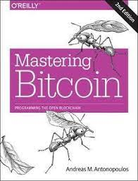

Libros
Bienvenido a nuestra sección de libros sobre Bitcoin y criptoactivos, donde el conocimiento se encuentra al alcance de tu mano. Sabemos que la educación es clave en el mundo de las criptomonedas y la tecnología blockchain, y los libros son una fuente inagotable de sabiduría.
Descubre y Aprende
En esta sección, te ofrecemos una cuidadosa selección de libros que abarcan una amplia variedad de temas relacionados con Bitcoin, criptoactivos, blockchain y las tecnologías subyacentes. Nuestra colección incluye desde introducciones básicas hasta profundas exploraciones técnicas y análisis avanzados.
Para Todos los Niveles
No importa si eres un principiante curioso, un inversor experimentado o un desarrollador en busca de conocimientos especializados; encontrarás libros adecuados para tu nivel de experiencia. Nuestro objetivo es democratizar el acceso a la información y fomentar la comprensión de esta tecnología revolucionaria.
Amplía tu Horizonte
Explora títulos que te ayudarán a:
- Comprender los fundamentos de Bitcoin y blockchain
- Aprender estrategias de inversión inteligente en criptoactivos.
- Sumergirte en el mundo de los contratos inteligentes y la programación blockchain
- Mantenerte al día con las últimas tendencias y avances tecnológicos.
Ya sea que estés aquí para aprender, investigar, invertir o simplemente satisfacer tu curiosidad, nuestra sección de libros es tu puerta de entrada al vasto mundo de Bitcoin y criptoactivos. ¡Sumérgete en las páginas de sabiduría que te ayudarán a navegar por las aguas emocionantes de las criptomonedas y la tecnología blockchain!
Explora nuestra selección de libros, adquiere conocimientos esenciales y empodérate para tomar decisiones informadas en este emocionante viaje de descubrimiento.

Filosofía del bitcoin y la descentralización: - Álvaro D. María
Ofrece una revisión sobre la historia del dinero, la naturaleza de bitcoin, su relevancia política y futuro.
La obra aborda el impacto de bitcoin a nivel teórico-histórico, centrándose en qué es esta moneda, qué es el dinero y por qué bitcoin tiene unas cualidades específicas que suponen una revolución en este ámbito. Además, expone y se adentra en el análisis de la crisis de dos ideas: la de la moneda vinculada a la validación de la autoridad política y la del Estado, centrándose, entre otros aspectos, en la redefinición del derecho de propiedad.
Álvaro trata de acercar al lector al mundo bitcoiner, presentando todas las revoluciones que supone esta moneda, como conseguir la escasez digital y no depender de terceros. Y lo hace de una forma amena, cercana, sin perder la riqueza de forma y fondo del libro, con referencias a citas tanto de otras obras como a tweets.
Micrópolis. Más allá del Leviatán - Álvaro D. María
¿Qué tienen en común el Estado, el Derecho, el ciberespacio, el bitcoin y las Micrópolis? Todos ellos son elementos de una nueva era: la era de la información. Partiendo del Estado y su crisis del Derecho, y desde un punto de vista filosófico, Micrópolis analiza el momento en el que nos encontramos: el ciberespacio y el bitcoin, y sus respectivas crisis del Estado; y hacia dónde vamos.
Este libro se escribe contra el Leviatán de Hobbes, y hace un recorrido por el Estado, el Derecho, la era industrial, la Modernidad, la crisis de esta era y los elementos que pueden permitir reconfigurarla, invitando al lector a hacer una profunda reflexión sobre la sociedad en la que vivimos.
«Nuestras sociedades viven un periodo de transformación megapolítica. Se está dando a luz a una nueva era. En nuestras manos está coger el timón y marcar el rumbo a seguir: mantener el statu quo, a pesar de que todos los vientos de la historia soplen en contra, dirigir la transición con diligencia a buen puerto o abandonarse al naufragio de nuestras sociedades.
Este ensayo tiene como objetivo abrir la imaginación en el campo de las formas políticas —no así en las de gobierno— al poner de manifiesto que el Estado no es más que la forma política de una época concreta y que, por tanto, pueden aparecer nuevas formas políticas. Si el Estado entra en crisis sin ninguna alternativa, se caerá en la anarquía y el sálvese quien pueda. Con el propósito de combatir ese escenario y aliviar el dolor del parto de la nueva era considero necesarias las Micrópolis. Los cambios de era no suelen ser pacíficos. Por ello, me parece de extrema urgencia trazar las líneas maestras que permitan reconfigurar el espacio político, con el fin de evitar la ruptura social y dirigir una transición mediante un nuevo contrato social.»
Entrevista de presentación del Libro con Lunaticoin
Exhuberancia Irracional

"Exuberancia Irracional" de Robert Shiller es una exploración fascinante de las burbujas financieras y los excesos del comportamiento del mercado. Shiller desentraña la psicología detrás de los frenesíes especulativos, incluyendo cómo la emoción y la euforia pueden llevar a la sobrevaloración de activos. Relacionando esto con las criptomonedas, el libro ofrece una perspectiva valiosa sobre la volatilidad extrema que caracteriza a estos activos. Shiller advierte sobre los peligros de la exuberancia irracional y cómo la historia muestra que los precios pueden desviarse significativamente de su valor real. Esta obra invita a reflexionar sobre la conexión entre la psicología del mercado, la especulación, la inversión en activos financieros y es alli en donde el lector puede trazar el paralelismo con el mercado de criptomonedas, aunque no lo mencione expresamente, destacando la importancia de la cautela y la comprensión de los riesgos al aventurarse en este mundo financiero.
En esta edición revisada, actualizada y ampliada de su bestseller del New York Times, el economista ganador del Premio Nobel Robert Shiller, que ya advirtió de la burbuja tecnológica y de la de la vivienda, ahora nos alerta de que los signos de la exuberancia irracional de los inversores no han hecho más que aumentar desde la crisis financiera de 2008-2009. Con los precios de las acciones y los bonos disparados en Estados Unidos y el incremento del precio de la vivienda en muchos países, el boom post-subprime bien puede llegar a convertirse una demostración más del argumento de Shiller sobre la volatilidad impulsada por los vaivenes psicológicos inherente a todos los mercados
Robert J. Shiller (Detroit, 1946) es economista, catedrático de economía en la Universidad Yale y ganador del Premio Nobel de Economía en 2013. Escribe habitualmente en The New York Times y es autor de, entre otros libros, los bestsellers Las finanzas en una sociedad justa (Deusto, 2012), Exuberancia irracional (Deusto, 2015), Animal Spirits (Gestión 2000, 2009) y La economía de la manipulación (Deusto, 2016), los dos últimos junto a George A. Akerlof.
La Desnacionalización del Dinero - Friedrich Hayek
"La Desnacionalización del Dinero" de Friedrich Hayek plantea la idea de competencia entre monedas emitidas por distintas entidades privadas, permitiendo a la gente elegir la moneda que prefiera. Hayek argumenta que esto generaría estabilidad y evitaría la manipulación estatal de la moneda.
En relación a Bitcoin, este libro establece un paralelismo interesante. Bitcoin, al ser descentralizado y no controlado por ninguna autoridad central, permite a las personas realizar transacciones independientes de gobiernos y bancos. Esto refleja la idea de competencia monetaria planteada por Hayek, ya que Bitcoin compite con monedas fiduciarias y propone una alternativa descentralizada.
La filosofía de Hayek sobre la desnacionalización del dinero y la competencia de monedas encuentra eco en el surgimiento y éxito de Bitcoin, ya que promueve la libertad de elección y la descentralización en el sistema financiero, conceptos fundamentales en la criptomoneda.
El secuestro de BITCOIN La historia oculta del BTC

Se prometió que Bitcoin sería una tecnología liberadora, una alternativa de libre mercado al dinero controlado por el estado. Pero esa promesa se rompió después de que un pequeño grupo de personas con información privilegiada se hiciera cargo del proyecto y cambiara fundamentalmente el diseño de Bitcoin. Pocas personas conocen la verdadera historia de Bitcoin y su diseño original debido a años de fuerte censura, ingeniería de redes sociales y estrictos controles de información en línea.
Hijacking Bitcoin destruye las narrativas más populares que rodean a Bitcoin y aclara el registro histórico. La pasión y el dolor de Roger Ver se manifiestan mientras cuenta la historia de un proyecto querido corrompido ante sus ojos. Escrito por una de las figuras más prominentes de la industria de las criptomonedas, este libro es imposible de ignorar. Desde la solapa interior: Bitcoin ha sido capturado y cambiado para peor. Esa es la conclusión innegable de Hijacking Bitcoin.
Repleto de historia y verdades incómodas, este libro se lanza a una ráfaga de desmitificación contra las narrativas más populares que rodean a BTC. ¿Bitcoin está realmente descentralizado? ¿Se supone que es oro digital o dinero digital? ¿El diseño original realmente tenía problemas de escalabilidad? Roger Ver aborda estas preguntas de frente y ofrece respuestas incómodas. Roger Ver es el primer inversor del mundo en empresas emergentes de Bitcoin y ha sido un nombre destacado en la industria de las criptomonedas desde el principio. Sin embargo, como confiesa en la introducción, este libro no es una historia de amor. Es una exposición devastadora de la corrupción, la propaganda y la centralización del poder en Bitcoin.
El libro promete revelar verdades incómodas sobre la historia de Bitcoin y cuestiona las narrativas dominantes. Cabe destacar que se trata de una visión crítica y parcializada, alineada con la postura de Roger Ver dentro del debate sobre el futuro de Bitcoin